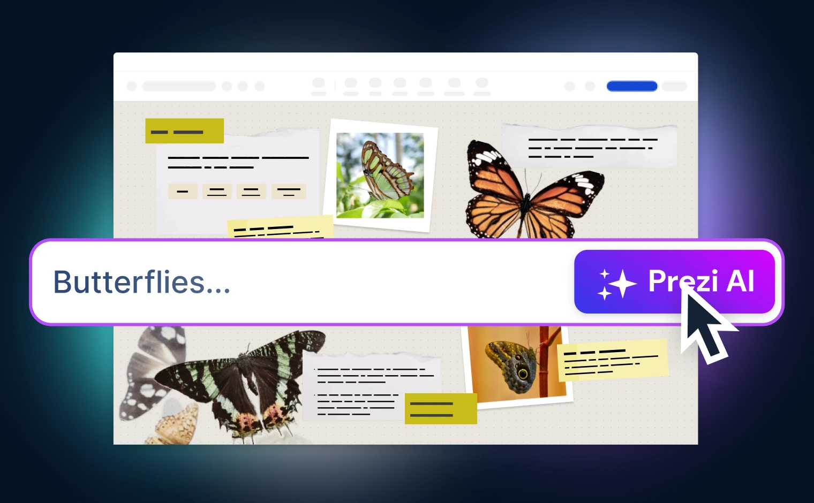
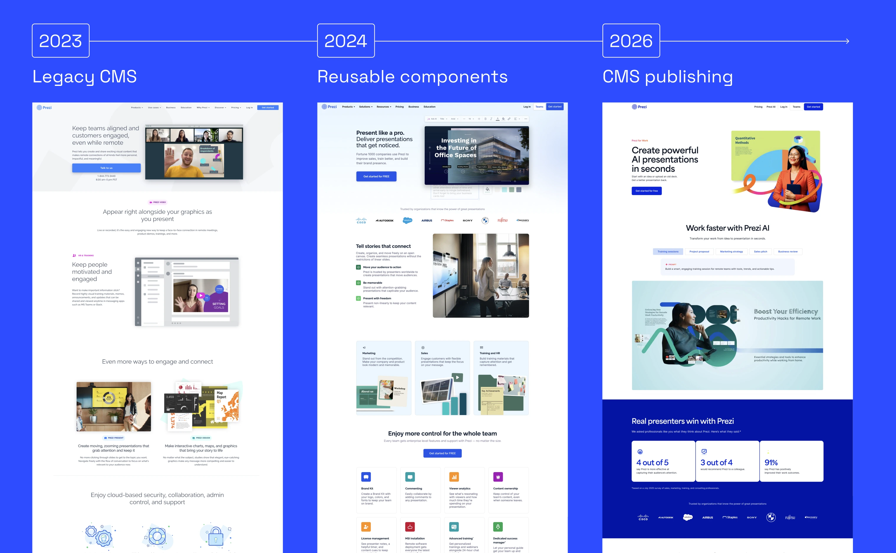
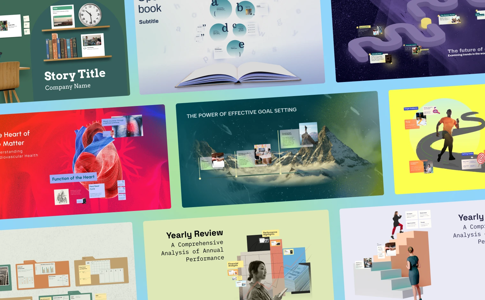
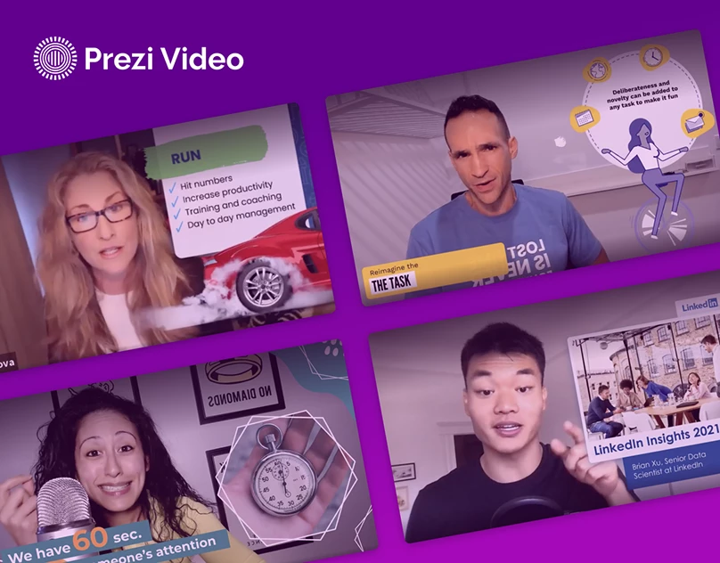
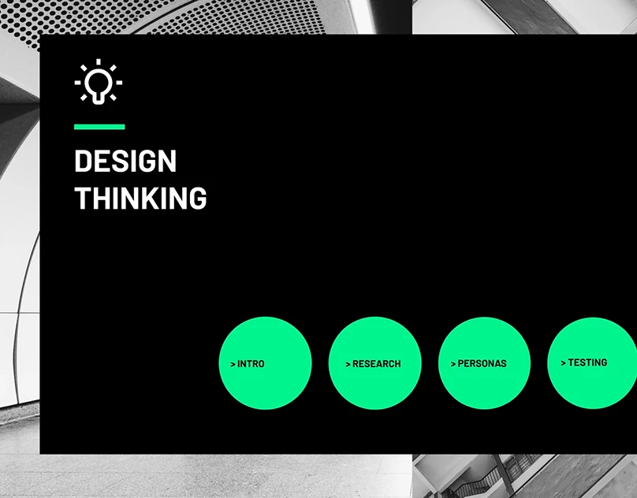
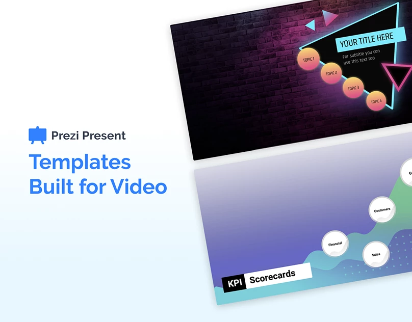
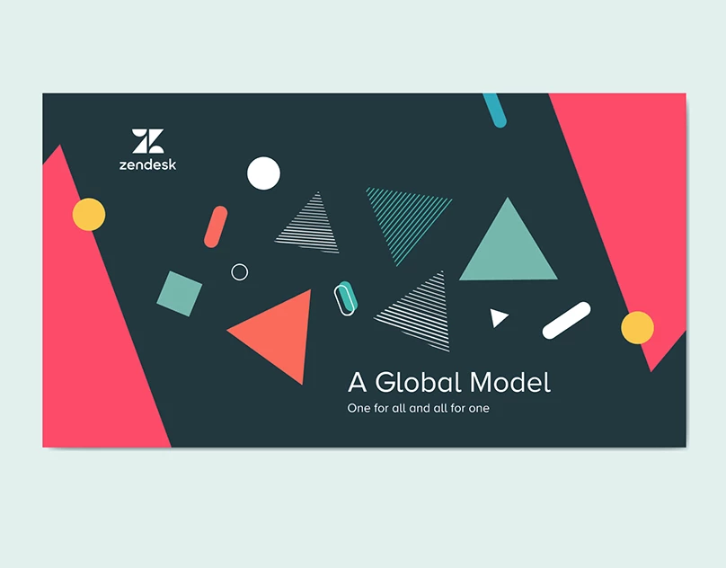
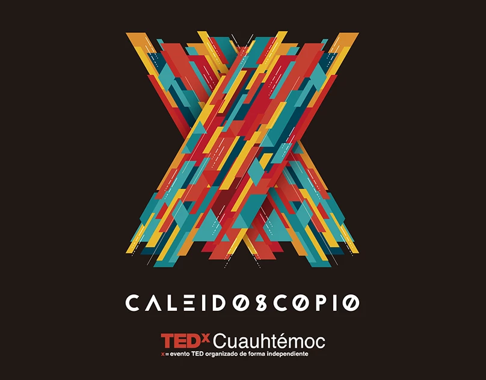
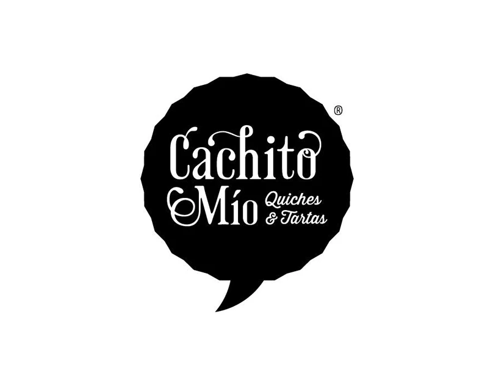

Visual designer — systems, brand, strategy
Brand identity, websites, and presentation systems designed to evolve.
I create visual systems that help brands communicate consistently across every touchpoint. Whether designing an identity, building a website, or developing presentation frameworks, my focus is always the same: making ideas easier to understand and teams easier to support.
Selected work
Three problems, one way of thinking about systems.

Case 01 — Campaign system, multi-format
Tomorrow Problem
Prezi's AI needed to feel human, not intimidating — a message that had to hold across video, email and product templates without turning either too technical or too illustrative.
Read the case study
Case 02 — Process & systems design
Growth Process Overhaul
An orphaned website, no process, no owner. Rebuilding it meant designing a repeatable pipeline — brief, copy, design, build — before redesigning a single page.
Read the case study
Case 03 — Template systems, three eras
Evolution of Templates
From designing for a user who customizes everything, to a system that must look intentional without knowing the content, to an AI making those same calls on its own.
Read the case studyMore work
Selected projects from Behance, updated as new work ships.

01 — Presentation Design
Influencer Presentations for Prezi Video
View on Behance
03 — Template Design
Design Thinking Template
View on Behance
04 — Template Design
Prezi Templates Built for Video
View on Behance
02 — Presentation Design
Zendesk Conference for Jeffrey Theobald
View on Behance
05 — Event Materials
TEDx Caleidoscopio
View on Behance
06 — Branding & Illustration
Cachito Mío
View on BehancePhilosophy
A template doesn't limit. It reduces the noise so someone can decide better.
Most of my work starts with the same challenge: making structured systems feel human, practical, and easy to use. When a system becomes too technical, it stops helping the people it was built for. Make it too dependent on craft, and it stops being scalable. The work is finding that balance — and giving people the confidence to use these tools independently. The goal isn't the template itself. It's creating an environment where people can focus on their ideas instead of the mechanics.